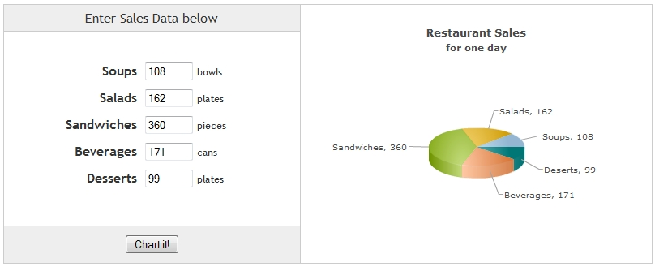

| Charting Data from HTML Forms |
In this page, we will show you how to use data from HTML Forms and render a chart using that data. We will build a simple restaurant sales example, where one will enter the items sold by a restaurant in a day. We will acquire this data and plot it on a chart. For the sake of simplicity, we will not do any validation on this data. However, your real life applications might process data before presenting it on the chart. s The code examples contained in this page are present in Download Package > Code > MyFirstChart > FormBased.html |
| The application will look as under:

See it live! |
| The user can put values in the input boxes for the food items and click "Chart it!". This button will generate the chart with the latest data provided in the input boxes.
The code for the above application is given below: |
<html>
<head>
<title>FusionCharts XT - Form Based Data Charting Example</title>
<script type="text/javascript" src="../../Charts/FusionCharts.js"></script>
</head>
<body>
<input type='text' size='5' id='soups' value='108'/> <span>bowls</span>
<input type='text' size='5' id='salads' value='162'/> <span>plates</span>
<input type='text' size='5' id='sandwiches' value='360'/> <span>pieces</span>
<input type='text' size='5' id='beverages' value='171'/> <span>cans</span>
<input type='text' size='5' id='deserts' value='99'/> <span>plates</span>
<input name="button" type='button' value='Chart it!' onclick="chartIt();" />
<div id="chartContainer">FusionCharts XT will load here</div>
<script type="text/javascript">
function chartIt()
{
// retrieving Form data
var soupSales = document.getElementById("soups").value;
var saladsSales = document.getElementById("salads").value;
var sandwichesSales = document.getElementById("sandwiches").value;
var beveragesSales = document.getElementById("beverages").value;
var desertsSales = document.getElementById("deserts").value;
// creating chart data from Form data
var chartXMLData = "";
chartXMLData += "<chart caption='Restaurant Sales' subCaption='for one day' >";
chartXMLData += "<set label='Soups' value='" + soupSales + "' />";
chartXMLData += "<set label='Salads' value='" + saladsSales + "' />";
chartXMLData += "<set label='Sandwiches' value='" + sandwichesSales + "' />";
chartXMLData += "<set label='Beverages' value='" + beveragesSales + "' />";
chartXMLData += "<set label='Deserts' value='" + desertsSales + "' />";
chartXMLData += "</chart>";
//rendering the chart
var myChart = new FusionCharts( "../../Charts/Pie3D.swf", "myChartId", "400", "300", "0" );
myChart.setXMLData( chartXMLData );
myChart.render( "chartContainer" );
}
</script>
</body>
</html>
See it live! |
Let's analyze the steps involved in the following code:
|
| Note : This is a very basic JavaScript example to showcase the use of Form data in charts. Hence, we have kept the code as simple as possible. It can always be optimized and shortened as per your needs. |